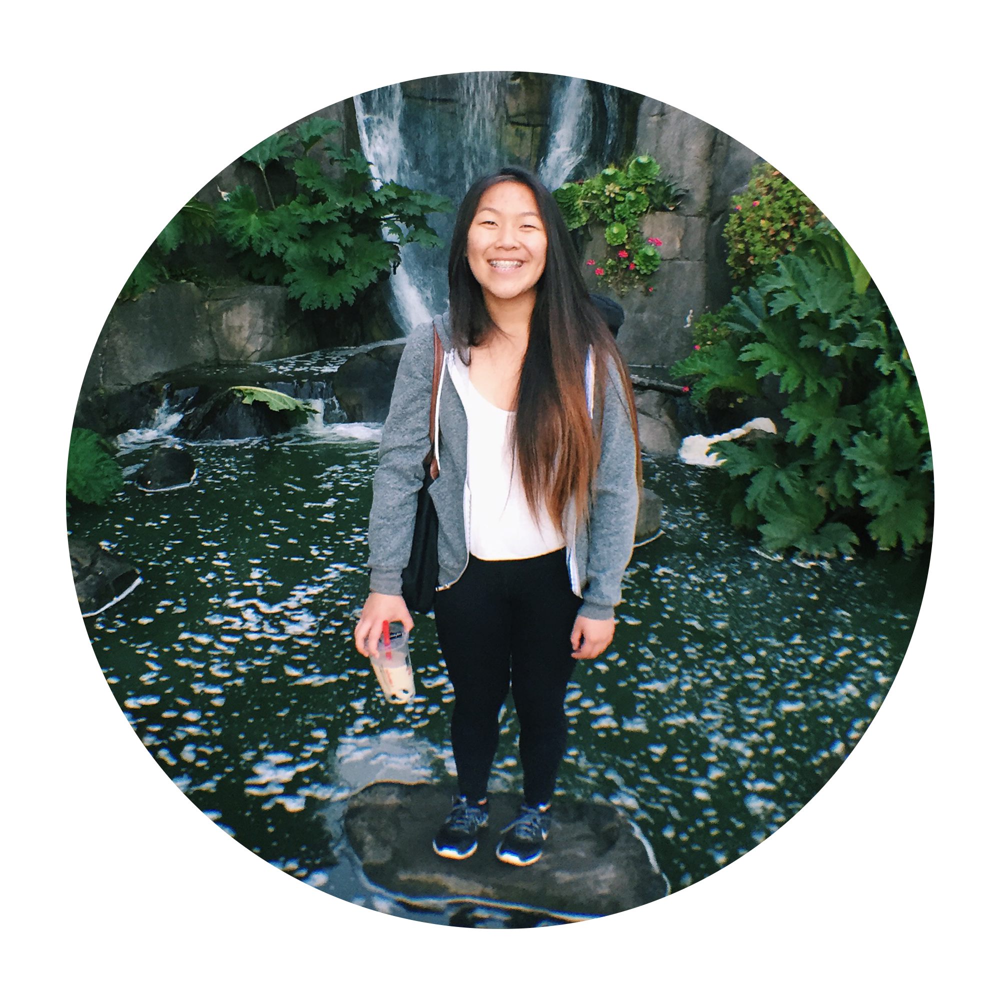

|  | |
Maggie LuoHello! I'm Maggie, and I'm currently a senior at Abraham Lincoln High School in San Francisco, California. I love making people laugh, wearing striped shirts, playing guitar, and spending long hours watching shows on Netflix. My favorite boba shops in the city are Cool Tea Bar in Chinatown and Purple Kow in the Richmond. I can never go wrong with a 75% sweet Roasted Oolong Milk Tea with boba and grass jelly! As a kid, I loved messing around with the HTML/CSS of my mySpace page and editing Maplestory videos to post on YouTube using Sony Vegas. During the Girls Who Code program, I fell in love with coding, and now aspire to become a software engineer when I grow up. |
Celena ChangI'm Celena, and I'm a senior at Lowell High School in San Francisco, California. I have been interested in computer science since I was a sophomore in high school. Besides coding, I also love to sketch, bike, and watch YouTube videos during my freetime. I aspire to be a software developer in the future and the Girls Who Code Summer Immersion Program has gotten me more excited and confident about entering the computer science field. On a side note, my favorite boba shop and the one I go to most often is BB Tea Station in the Sunset District. Although there are many milk tea flavors, I always tend to order the original from any milk tea shop. |